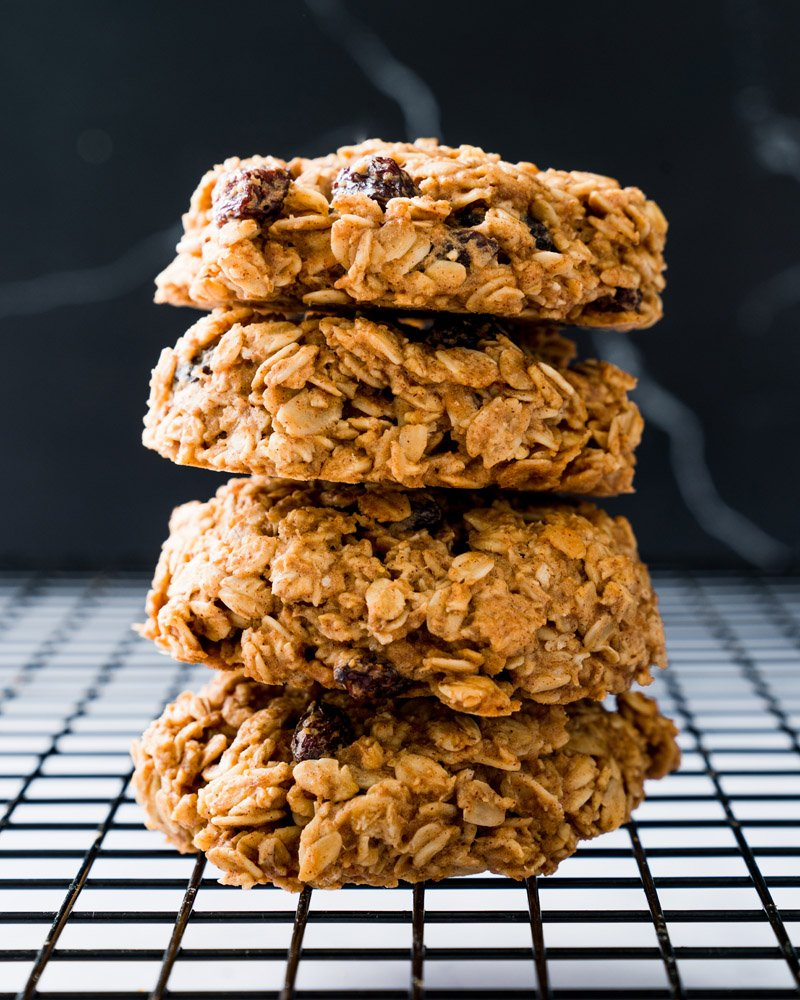

Breakfast Cookies

The path to healthy breakfast ideas is difficult, especially for meals on
the go. So here’s a make ahead breakfast that fits in the palm of your
hand: these Healthy Oatmeal Breakfast Cookies! Yes, it’s magic: oats, nut
butter, applesauce, and maple syrup transform into cookies that you can
eat for breakfast. There’s none of those traditional cookie ingredients:
no flour, no butter, no oil, and no refined sugar. How is it possible?
You’ve got to taste. Read the post for some important pointers.
Ingredients
- ½ cup unsweetened applesauce
-
⅓ cup creamy peanut butter or creamy almond butter
- ½ cup pure maple syrup
- 3 cups Old Fashioned rolled oats
- 1 teaspoon baking powder
- 2 teaspoons cinnamon
- ½ teaspoon kosher salt
- ¼ cup raisins
Steps
-
Preheat the oven to 350 degrees Fahrenheit. Line a large rimmed baking
sheet with parchment paper.
-
In a large bowl, mix together the applesauce, maple syrup, and peanut
butter. Stir in the oats, baking powder, cinnamon and salt and mix very
well to combine into a dough. Add the raisins and stir until combined.
The dough will be wetter than you expect, but it’s as intended.
-
Line a baking sheet with parchment paper. Scoop out 1/4-cup portions of
dough and use the palm of your hand to gently shape it into a cookie to
about 3/4-inch thick. The cookie won’t spread while baking, so make it
the shape you’d like the final cookie. Place it on the prepared baking
sheet. If it doesn’t pop right out of the cup, you can remove it with
your hands, form it into a ball and then flatten it into a cookie shape
with your hands. Again, the dough will be wetter than a normal cookie
dough. Repeat to make 11 cookies with the ¼ cup measure, or make 12
slightly smaller cookies. Press a few extra raisins into the tops of any
cookies that seem sparse.
-
Bake until the cookies are golden and firm, about 20 to 25 minutes. Let
cool on the pan 5 minutes, then transfer to a rack and cool to room
temperature, about 20 minutes. The texture becomes softer during
storage. Leftover breakfast cookies will store in a sealed container at
room temperature for up to 5 days, in the refrigerator for up to 2
weeks, and in the freezer for up to 3 months (you can wrap individually
in foil if you like or place in a freezer proof container).
Back to Home